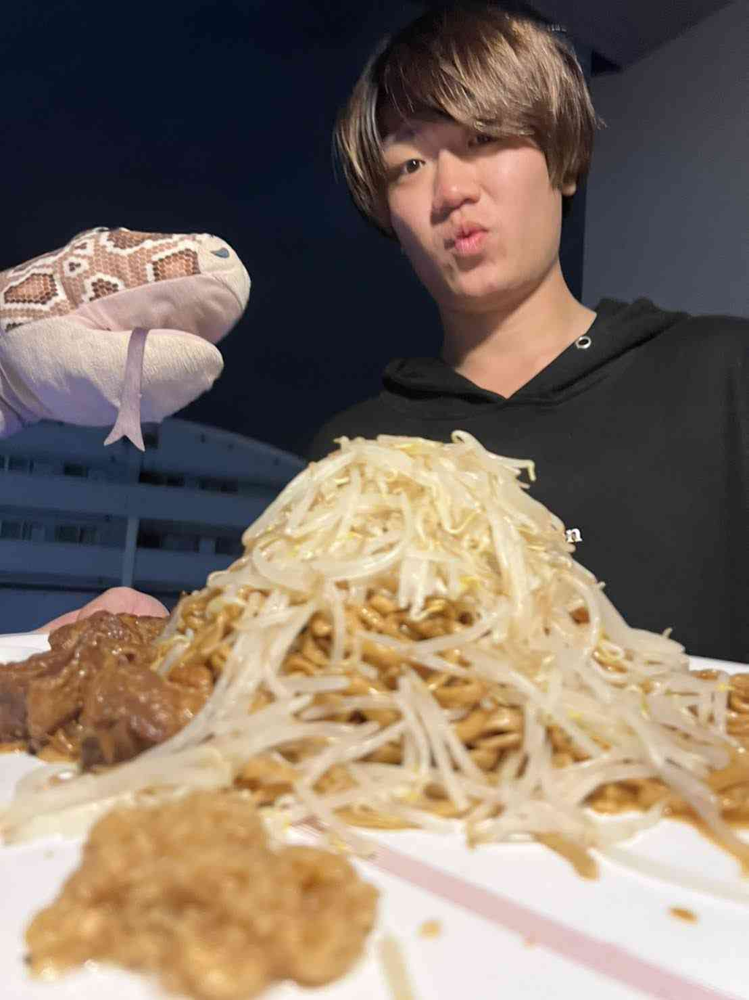

U.R
北大サッカー部元主将
チームを強くし、次のつながりをつくる。
数百万円スポンサー
データ戦術
北大サッカー部で主将を務め、数百万円規模の協賛獲得とデータ戦術に取り組む。現在はSPOTERIAを進めている。
藤野さん勉強会｜毎週金曜・北大エンレイソウ
夢、迷い、まだ言葉になっていない違和感。それぞれの問いを持ち寄り、仲間と話し、次の一歩を考える。北海道につくる、現代の松下村塾です。
向いている人
置き去りにしない感覚
やりたいことに向き合わないまま、それなりに時間が過ぎていくこと。
ポジショニング
知識を受け取るだけでも、名刺を交換して終わるだけでもない。自分の問いを言葉にし、仲間の視点で見つめ直し、次の一歩まで持ち帰る場所です。
正解を覚えるより、自分の問いを深くする。
出会って終わるより、互いの行動を動かす。
きれいな答えを持つ人だけが集まる場所ではありません。まだ荒い言葉を持ち寄り、志に変えていくための学びの場です。

プロセス
夢、迷い、違和感を、そのまま持ってくる。
まだ曖昧な考えを、自分の言葉で話してみる。
仲間の経験や違う見方から、問いを見つめ直す。
大きな結論ではなく、次に動く具体を持ち帰る。
4人、4つの進み方
北大サッカー部で主将を務め、数百万円規模の協賛獲得とデータ戦術に取り組む。現在はSPOTERIAを進めている。
東京の会社でエンジニアインターンを経験し、技術と環境の差に向き合う。50名規模のAIサークルを立ち上げている。
「GAFAをつくる」
HFFを主催運営。小樽商科大学「オアソビプロジェクト」に採択され、活動を進めている。
「感情に敬意を、未来に透明性を。」
Hokkaido AI GameJamを、複数IT企業の協賛予定で準備中。地方で熱狂が生まれ続ける場づくりを目指している。
「地方に熱狂を生み続ける」
代表の声

やりたいことが、最初からきれいな言葉になっている人なんていません。誰かと本気で話し、フィードバックを受けて、まず動いてみる。その繰り返しの中で、その人にしかない個性が見えてくる。ここを、北海道の若者が志を育てる、現代の松下村塾にしたいと思っています。
開催概要
申込・連絡
まだ、きれいな答えになっていなくてもかまいません。今考えていることを、あなたの言葉で聞かせてください。